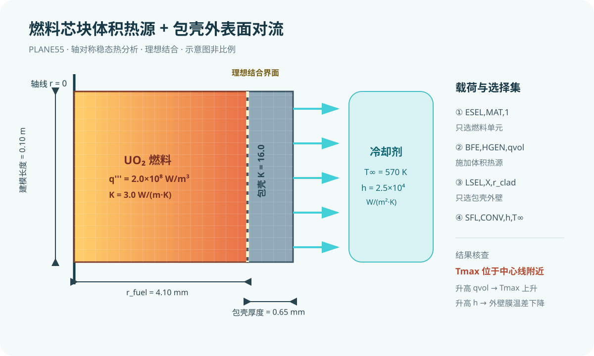
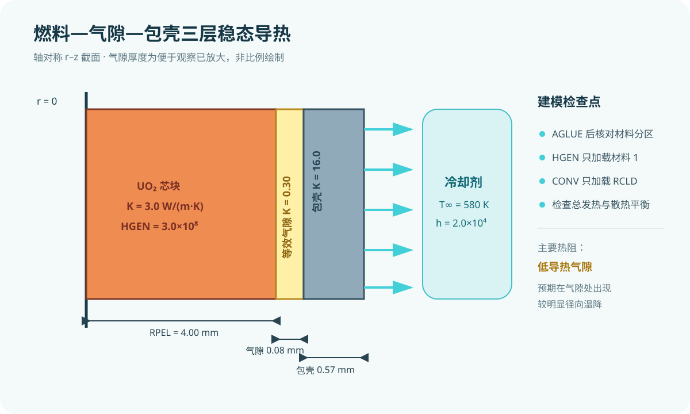
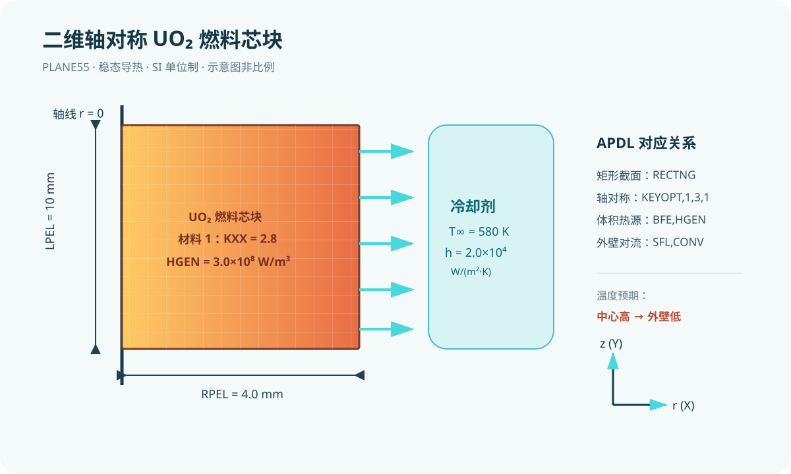

从单位制、参数化和燃料棒导热开始，逐步进入燃料—包壳耦合、控制棒热应力、接触、蠕变、疲劳与组件振动。每课包含中文讲义、完整 .inp 示例、验证清单和练习题。

已完成命令结构、材料选择、热源选择、外壁对流选择及 SI 单位一致性静态检查；未启动 MAPDL。

已完成 APDL 命令分段、材料选择、边界选择及 SI 单位一致性静态检查；未启动 MAPDL。

本次未启动 MAPDL；已按 APDL 命令分段和 SI 单位一致性进行静态检查。